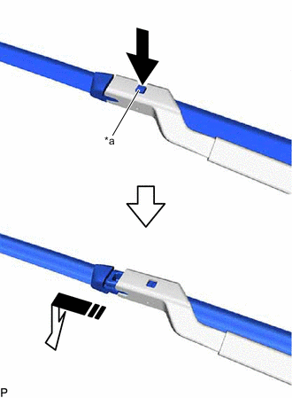
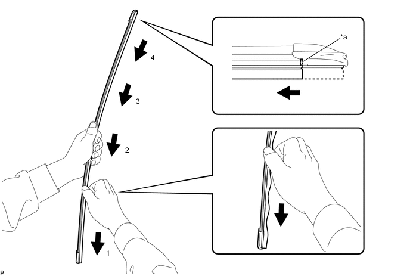
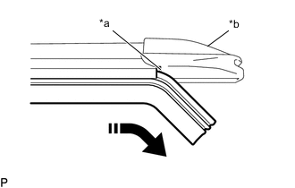

FRONT WIPER RUBBER REMOVAL
PROCEDURE
-
REMOVE FRONT WIPER BLADE
-

*a Lock Button 
Push 
Remove in this Direction Push the lock button of the front wiper blade to release the lock.
-
Remove the front wiper blade from the front wiper arm as shown in the illustration.
Note
Place a piece of cloth between the front wiper arm and windshield glass to avoid damaging the windshield glass.
-
-
REMOVE WIPER RUBBER
Tech Tips
The wiper rubber can be removed from either end of the front wiper blade.
-
Pull the wiper rubber as indicated by the arrows, in the order shown in the illustration, until its end is aligned with the slits in the front wiper blade.

*a Slit - - -

*a Slit *b Shield Cap Remove in this Direction Pull the end of the wiper rubber through the slits in the front wiper blade in the direction indicated by the arrow shown in the illustration and remove the wiper rubber.
Note
Make sure not to remove the shield caps. If a shield cap is removed, the wiper rubber may separate from the front wiper blade while driving.
-